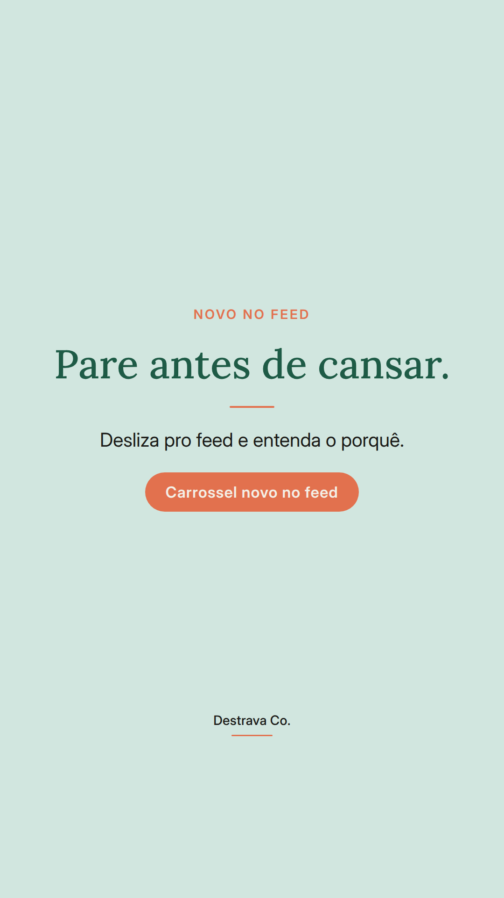
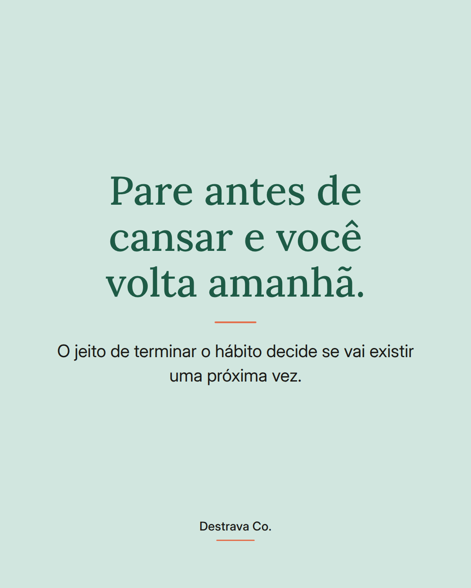
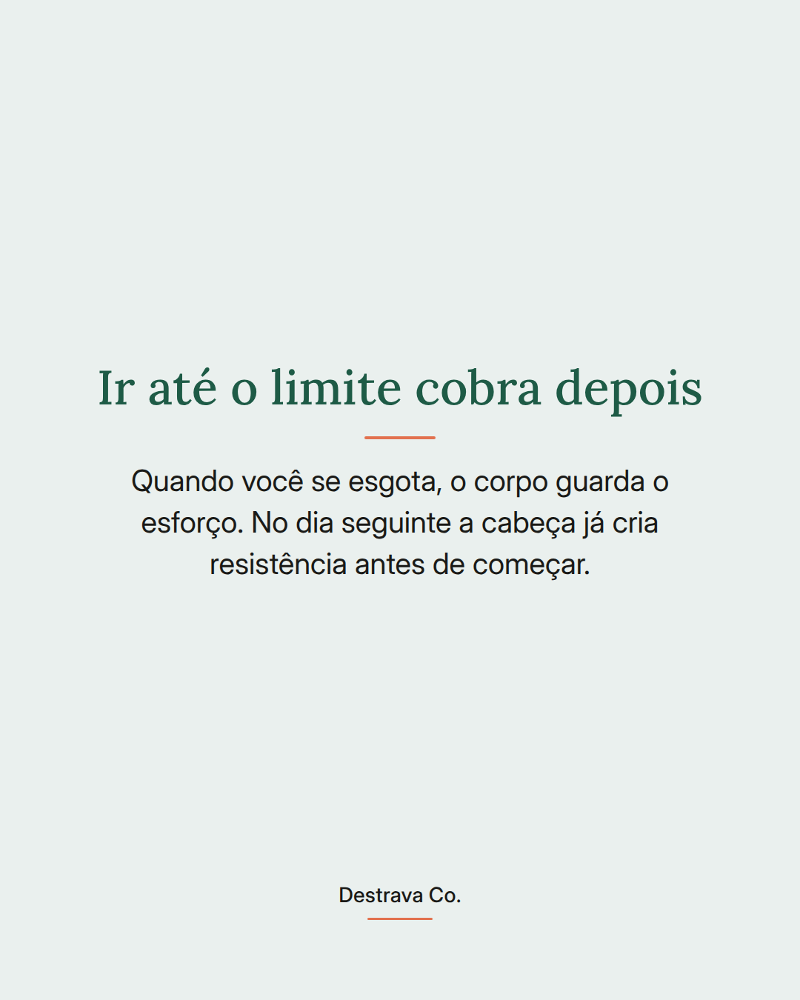
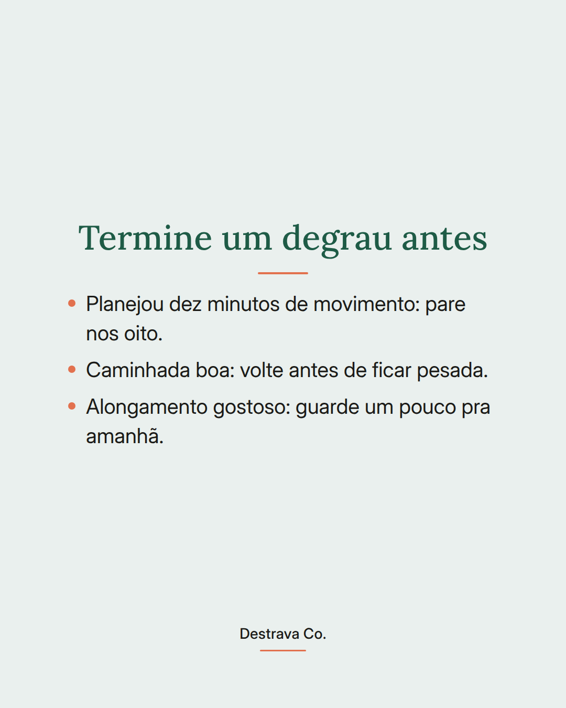
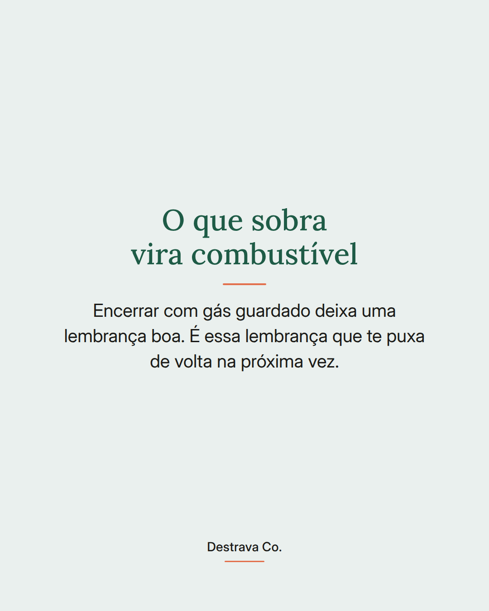
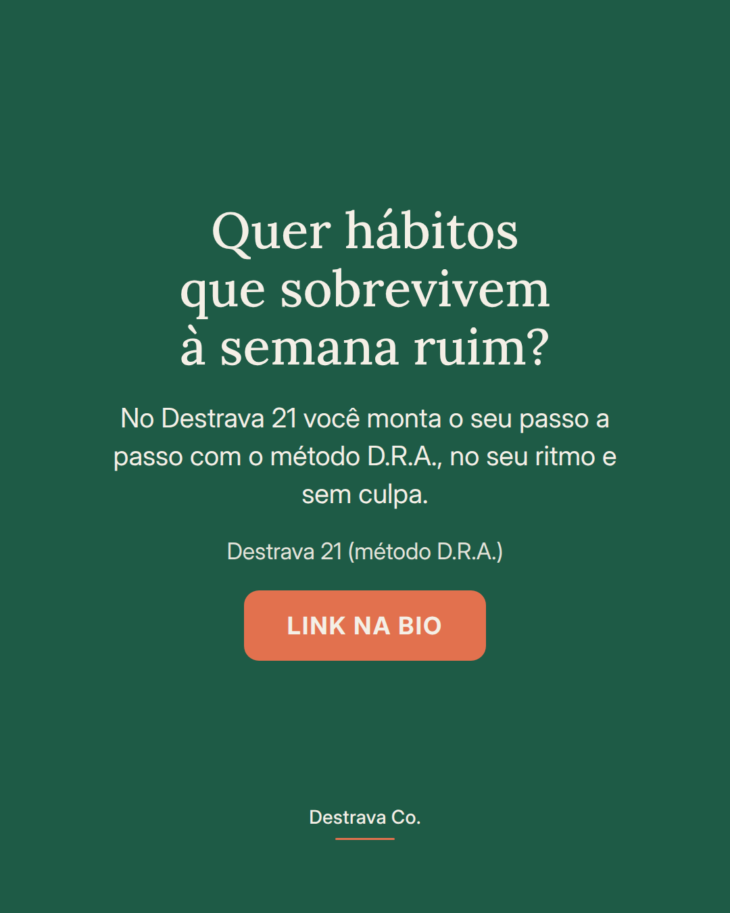

Pare antes de cansar: é assim que o hábito sobrevive à semana.
Constância não nasce do dia heroico. Nasce de terminar o movimento com um pouco de energia sobrando, em vez de chegar arrasada no fim.
Quando você se esgota, o corpo guarda o esforço e amanhã a resistência vem antes mesmo de você calçar o tênis. Quando você encerra um degrau antes, fica aquela sensação de que dava pra mais. E é ela que te traz de volta.
Teste essa semana: planejou dez minutos, pare nos oito. Caminhada boa, volte antes de pesar.
Salva pra lembrar no próximo dia corrido e compartilha com uma amiga que vive recomeçando. Se quiser montar isso com um passo a passo, o Destrava 21 te acompanha.